#1 · 6147 頎邦2026-09-22 10:00
-3.37%
進場 227.50 破底 220.50 @ 09:05 跌幅 5.4% 反彈 3.2% MA5 226.00 MA10 224.55 MA20 224.15 間隔 0.81% MA60 224.22 MA120 — MA200 — 破底量 8.6x 反彈量 2.7x 蓋子 —
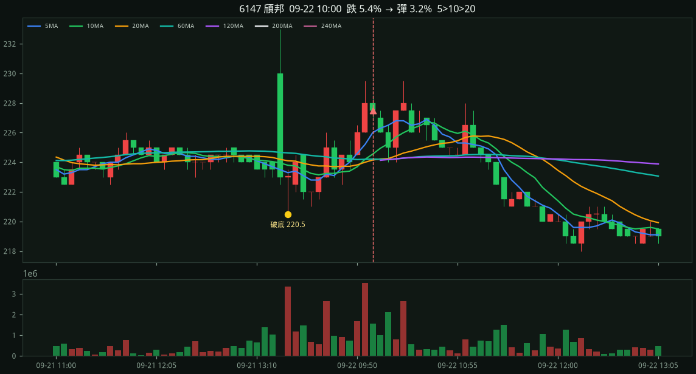
7d · 股價≤700 · 均線不糾結 · 富喬標準 · 44 檔
急殺破近 4 小時低點或今日低點（跌幅 ≥ 2%），且破底那根下方不能有任何均線。24 根內 5MA > 10MA > 20MA 要明顯分開、往上張開才算；糾結黏帶不算。
富喬標準：破底那段要爆量（≥ 2 倍前 20 根均量）、反彈段要帶量（≥ 破底前均量）、進場價站回 60MA 之上。卡片跌幅用當日高點，也要 ≥ 2%。頭上 0.5% 內有均線蓋子的，除非當日急殺 ≥ 5% 否則不算。
進場 227.50 破底 220.50 @ 09:05 跌幅 5.4% 反彈 3.2% MA5 226.00 MA10 224.55 MA20 224.15 間隔 0.81% MA60 224.22 MA120 — MA200 — 破底量 8.6x 反彈量 2.7x 蓋子 —

進場 317.00 破底 307.50 @ 13:10 跌幅 5.7% 反彈 3.1% MA5 315.40 MA10 313.75 MA20 313.23 間隔 0.69% MA60 311.47 MA120 309.24 MA200 — 破底量 7.0x 反彈量 2.5x 蓋子 —
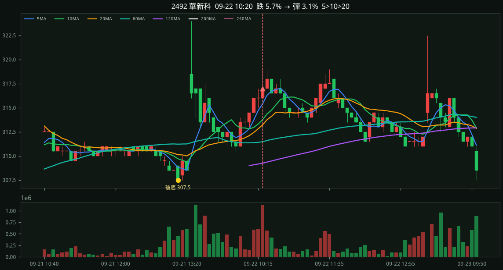
進場 103.00 破底 99.50 @ 09:25 跌幅 5.7% 反彈 3.5% MA5 102.80 MA10 102.25 MA20 101.97 間隔 0.80% MA60 102.66 MA120 98.18 MA200 — 破底量 10.1x 反彈量 1.3x 蓋子 —
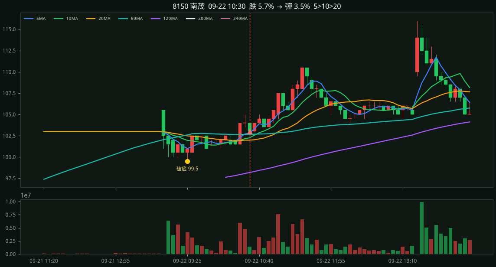
進場 102.00 破底 99.10 @ 09:45 跌幅 3.3% 反彈 2.9% MA5 101.80 MA10 101.10 MA20 100.82 間隔 0.97% MA60 100.86 MA120 100.46 MA200 — 破底量 2.8x 反彈量 1.0x 蓋子 —
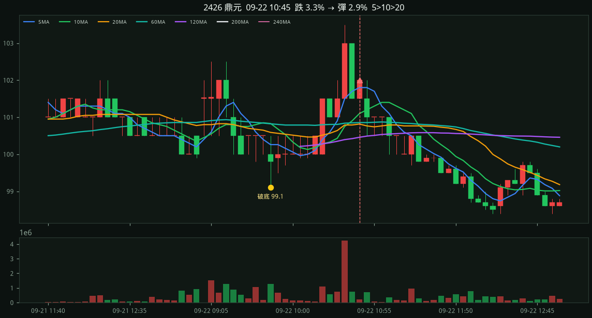
進場 123.00 破底 120.00 @ 11:55 跌幅 7.3% 反彈 2.5% MA5 121.90 MA10 121.65 MA20 121.38 間隔 0.43% MA60 122.55 MA120 122.10 MA200 — 破底量 3.0x 反彈量 1.9x 蓋子 —
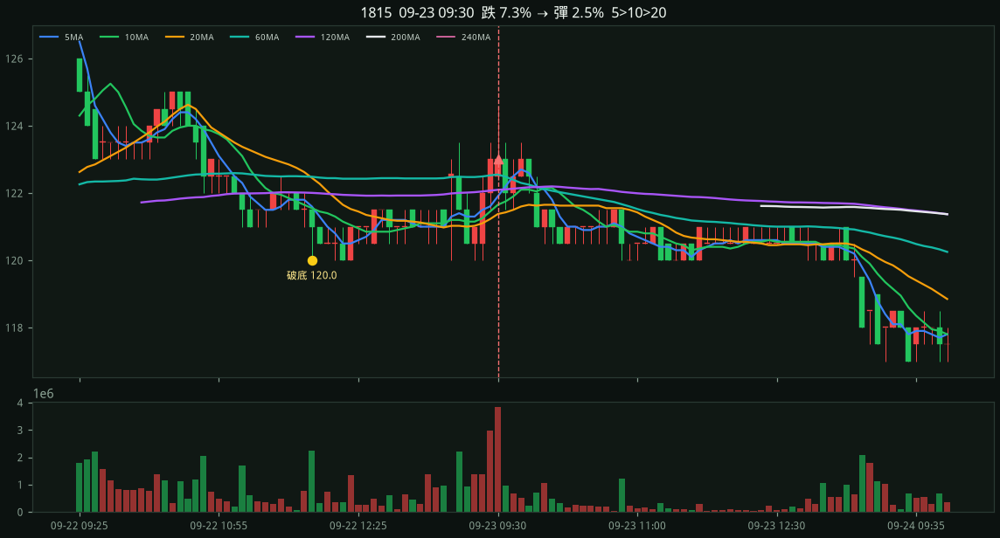
進場 454.00 破底 430.50 @ 09:00 跌幅 3.3% 反彈 5.5% MA5 450.70 MA10 449.40 MA20 444.25 間隔 1.42% MA60 446.39 MA120 442.85 MA200 — 破底量 2.4x 反彈量 4.9x 蓋子 —
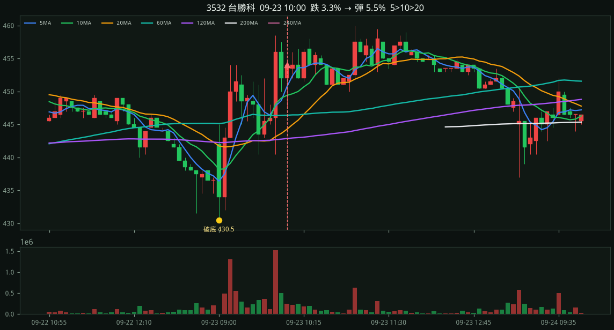
進場 73.50 破底 71.80 @ 13:15 跌幅 3.9% 反彈 2.4% MA5 73.30 MA10 72.83 MA20 72.67 間隔 0.86% MA60 72.90 MA120 73.02 MA200 — 破底量 4.1x 反彈量 3.6x 蓋子 —
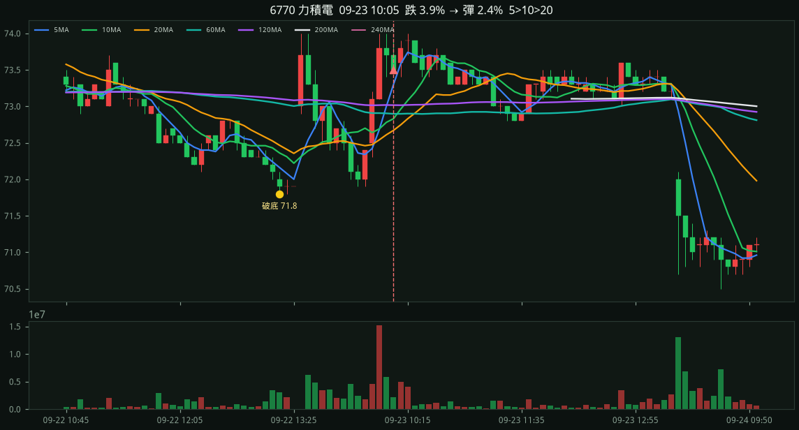
進場 175.00 破底 170.50 @ 09:20 跌幅 3.1% 反彈 2.6% MA5 174.80 MA10 173.40 MA20 173.12 間隔 0.96% MA60 174.69 MA120 173.04 MA200 — 破底量 2.5x 反彈量 1.3x 蓋子 —
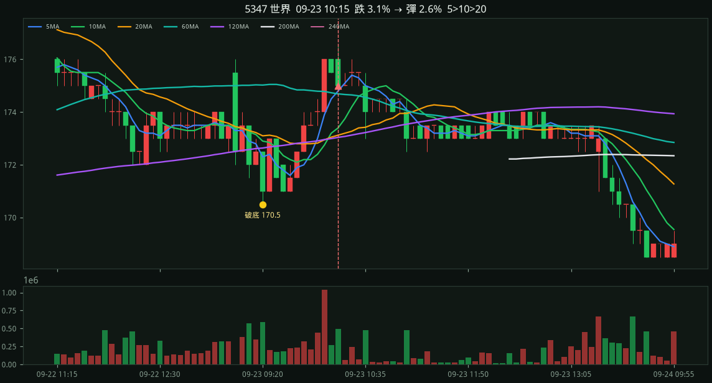
進場 186.00 破底 179.00 @ 10:00 跌幅 4.0% 反彈 3.9% MA5 183.50 MA10 182.80 MA20 182.05 間隔 0.78% MA60 184.38 MA120 184.65 MA200 — 破底量 3.8x 反彈量 1.3x 蓋子 —
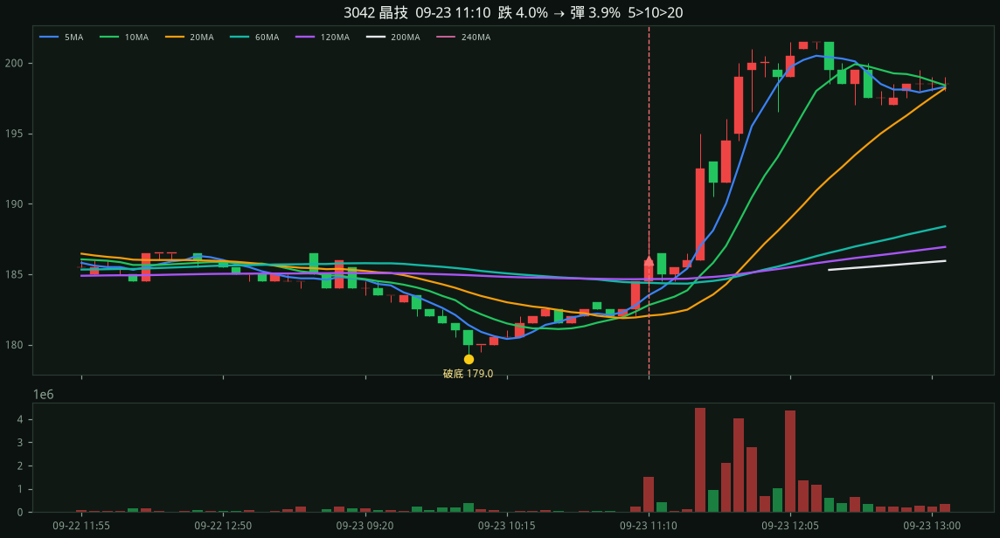
進場 35.60 破底 33.40 @ 11:25 跌幅 8.9% 反彈 6.6% MA5 35.07 MA10 34.47 MA20 34.32 間隔 2.09% MA60 35.35 MA120 35.23 MA200 — 破底量 2.3x 反彈量 1.9x 蓋子 —
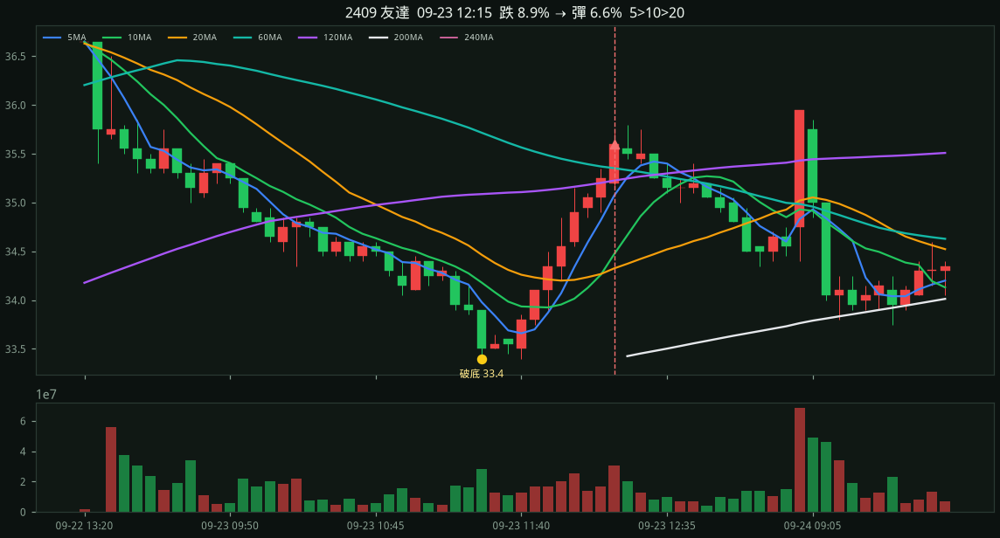
進場 99.90 破底 96.70 @ 09:00 跌幅 3.8% 反彈 3.3% MA5 99.32 MA10 99.00 MA20 98.59 間隔 0.73% MA60 98.87 MA120 99.46 MA200 99.89 破底量 12.6x 反彈量 2.8x 蓋子 —
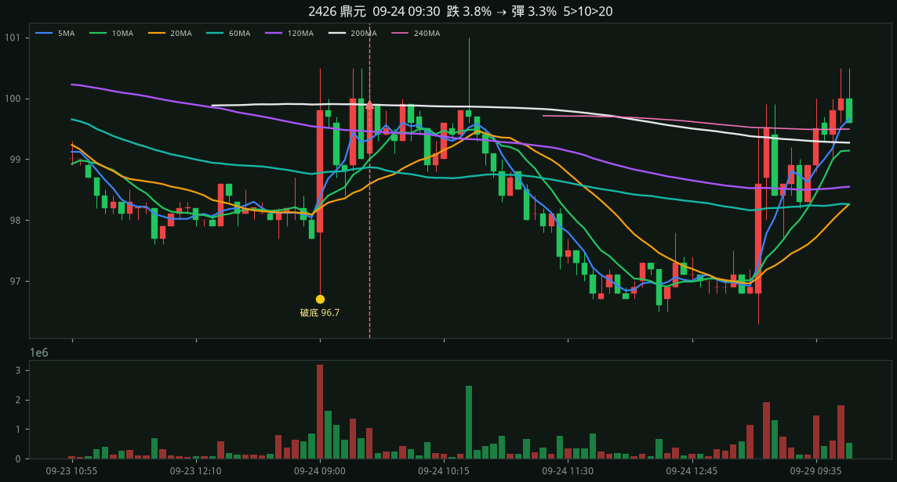
進場 187.00 破底 181.50 @ 09:00 跌幅 2.7% 反彈 3.0% MA5 186.50 MA10 186.10 MA20 185.12 間隔 0.74% MA60 184.92 MA120 190.97 MA200 189.56 破底量 11.3x 反彈量 1.5x 蓋子 1.37%
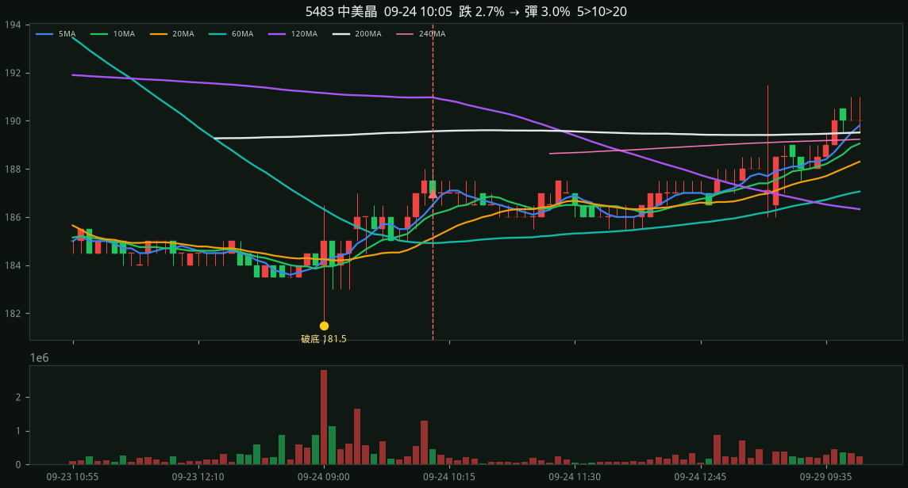
進場 216.00 破底 208.00 @ 09:15 跌幅 2.8% 反彈 3.8% MA5 214.10 MA10 212.95 MA20 212.45 間隔 0.76% MA60 212.18 MA120 214.10 MA200 217.87 破底量 7.2x 反彈量 2.5x 蓋子 0.86%
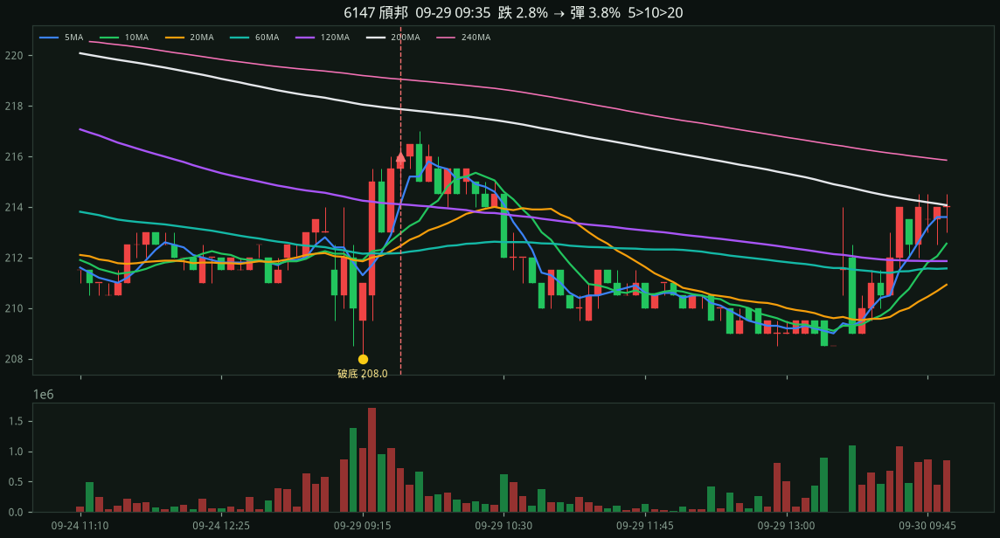
進場 99.80 破底 96.30 @ 09:00 跌幅 3.2% 反彈 3.6% MA5 99.18 MA10 98.99 MA20 98.00 間隔 1.18% MA60 98.25 MA120 98.52 MA200 99.28 破底量 4.2x 反彈量 2.1x 蓋子 —
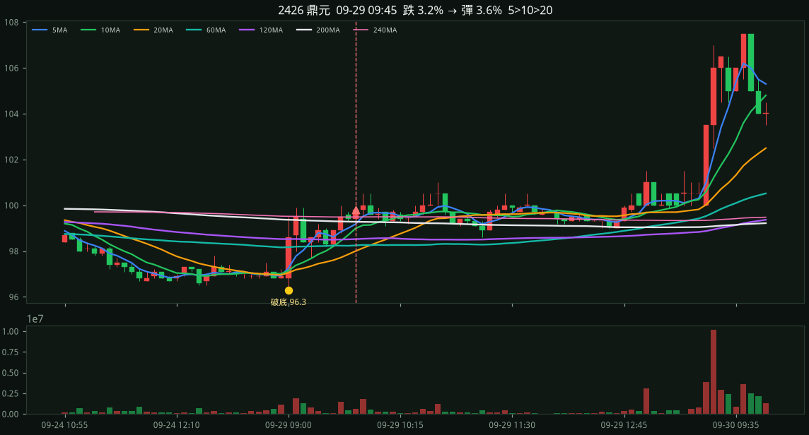
進場 118.00 破底 114.50 @ 09:00 跌幅 2.1% 反彈 3.1% MA5 117.80 MA10 117.10 MA20 116.80 間隔 0.85% MA60 116.21 MA120 117.92 MA200 118.65 破底量 5.0x 反彈量 1.4x 蓋子 0.55%
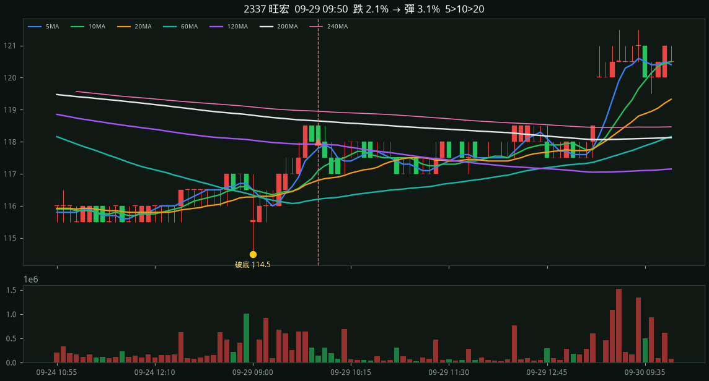
進場 206.50 破底 191.50 @ 09:00 跌幅 2.8% 反彈 7.8% MA5 201.80 MA10 198.65 MA20 198.03 間隔 1.83% MA60 198.54 MA120 203.97 MA200 202.11 破底量 8.4x 反彈量 2.5x 蓋子 —
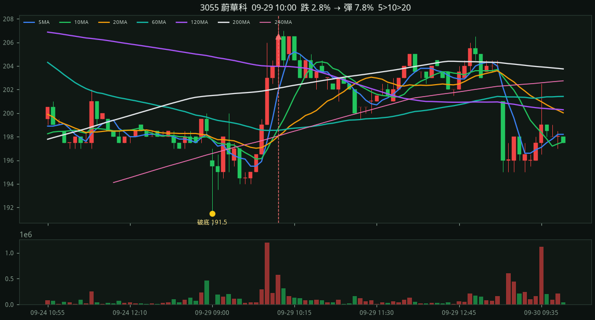